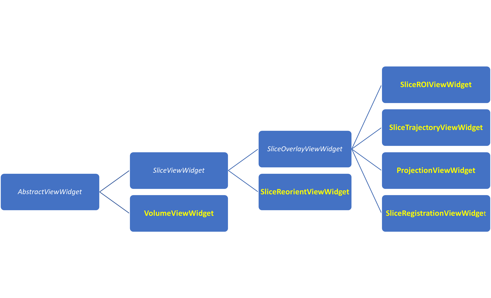
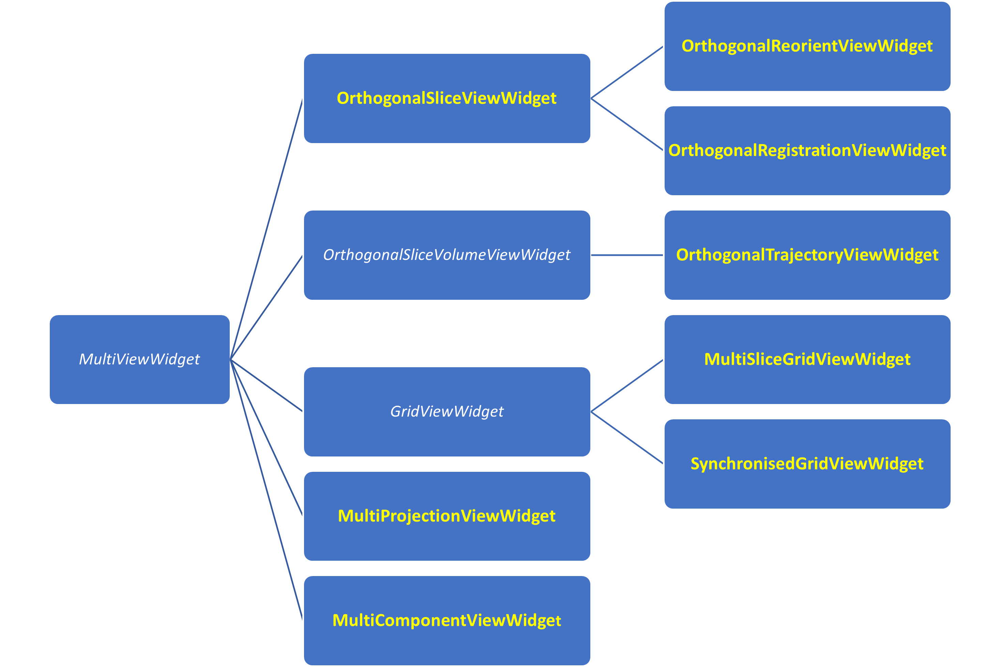
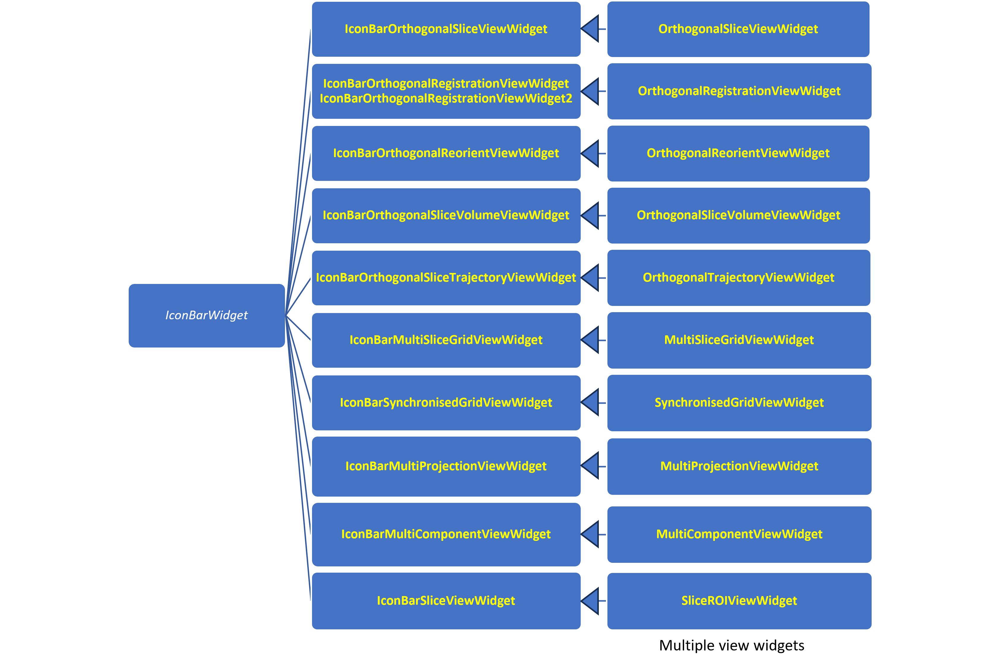

Understanding view widgets
There are three types of view widget:
Single view widgets, which have a single viewport for displaying a SisypheVolume.
Multiple view widgets, which provide a grid of viewports to display a SisypheVolume. These widgets internally encapsulate several synchronized Single view widgets.
Icon bar widgets, which encapsulate Multiple view widgets and addtionaly provide a collapsible icon bar on the left.
Single view widgets
{kind=link}

Single view widget hierarchy, base classes in italics and white
Sisyphe.widgets.abstractViewWidget.AbstractViewWidget
This abstract class is designed to provide a set of common methods and functionalities for all view widgets.
The main features are as follows:
Rendering Pipeline: establishes a multi-layered VTK rendering setup, separating the primary data display (i.e. SisyppheVolume display) from 2D information overlays.
User Interaction: implements handling for mouse and keyboard events, enabling standard viewport navigation like zooming, panning, and window/level adjustments.
Informational overlays: manages a set of configurable 2D VTK actors for displaying contextual information such as a color bar, scale ruler, orientation marker, cross-shaped cursor, and detailed text attributes about the patient and image.
Tool management: provides a framework for adding, managing, and interacting with a variety of 2D and 3D tools, including distance, angle, target (point), and trajectory (line) widgets.
Context menus: features a right-click popup menu system that offers easy access to viewport actions, visibility settings, and tool-specific operations.
Synchronization: uses a Qt signal and slot mechanism to enable the synchronization of cursor position, zoom, and tool manipulations across multiple linked viewports.
Configuration and export: supports user settings (e.g. colors, fonts…) and includes functionality to save the current view to a bitmap image file or copy it to the system clipboard.
Sisyphe.widgets.sliceViewWidgets.SliceViewWidget
This is the base class used for displaying and interacting with two-dimensional orthogonal slices (axial, coronal, and sagittal) from a SisypheVolume. It is specialized subclass of the AbstractViewWidget class.
The main features are as follows:
Orthogonal slice viewing: allows users to dynamically switch between axial, coronal, and sagittal orientations, automatically reconfiguring the camera and orientation labels.
Interactive slice navigation: implements controls for scrolling through the volume’s slices using the mouse wheel or keyboard shortcuts.
Advanced information display: enhances the standard information overlays with slice-specific information, including orientation markers (e.g., A/P, L/R), the voxel value at the cursor, and multiple coordinate systems (world, AC-PC, Leksell Frame, ICBM).
Slice and Camera Control: manages a vtkImageResliceMapper to extract and render the current slice, with the camera’s focal point controlling the slice position. It also manages a narrow clipping range around the slice to optimize rendering performance.
Display properties: provides methods to control the visibility and opacity of the slice.
Synchronization: emits and receives Qt signals to synchronize the slice position (cursor), zoom/pan, and display properties across multiple linked viewports.
Export: includes a utility to save a series of captures, stepping through the volume along the current orientation and saving each slice as a bitmap image file.
This widget serves as the base class for more specialized two-dimensional viewers, such as those for overlays, reorientation, and ROI editing.
Sisyphe.widgets.sliceViewWidgets.SliceReorientViewWidget
This is a specialized subclass of the SliceViewWidget base class provides interactive tools for reorienting a SisypheVolume.
The main features are as follows:
Interactive geometric transformation: it introduces a reslice cursor that users can manipulate with the mouse to apply rigid transformations. Dragging the cursor’s center translates the volume, while dragging its edges applies rotations.
Field of View (FOV) Visualization: a wireframe box is rendered to represent the volume’s current field of view. This box dynamically updates with every transformation, providing clear visual feedback on the volume’s alignment in 3D space.
Resampling space control: the widget allows users to modify the target resampling space by adjusting the output volume’s size (dimensions) and spacing (voxel size).
Synchronization: it uses Qt signals and slots to synchronize transformations, resampling parameters, and cursor state across multiple linked SliceReorientViewWidget instances.
Export: the geometric transformation can be retrieved as a SisypheTransform instance, which encapsulates the translations, rotations, and resampling parameters needed to perform the final resampling operation.
Sisyphe.widgets.sliceViewWidgets.SliceOverlayViewWidget
This is a specialized subclass of the SliceViewWidget base class that displays two-dimensional orthogonal slices of one or more SisypheVolume instances as overlays on a primary reference volume.
Additional features are as follows:
mesh management: ability to display 2D cross-sections of SisypheMesh instances and to generate isocontour lines (isolines) for any displayed volume (reference or overlay).
Enhanced information display: voxel values from a selected overlay.
Synchronization: it uses Qt signals and slots to synchronize transformations, mesh visibility, and isoline settings across multiple linked SliceOverlayViewWidget.
Sisyphe.widgets.sliceViewWidgets.SliceRegistrationViewWidget
This is a specialized subclass of the SliceOverlayViewWidget class designed to facilitate the visual assessment of image coregistration quality.
The main features are as follows:
Interactive crop box: a BoxWidget that creates a “spyglass” effect. The moving volume is displayed exclusively inside this box, while the reference volume is shown outside. Users can drag and resize the box to closely inspect alignment at various locations.
Multiple display modes: the moving volume can be displayed in several ways:
‘Native’ original moving volume.
‘Edge’ edge-detected (gradient) version of the moving volume.
‘Edge and Native’ combining both the original and edge-detected images.
Registration area definition: a BoxWidget allows the user to define a specific sub-region (area of interest) for registration. The coordinates and size of this area can be retrieved for use in registration algorithms.
Synchronization: it uses Qt signals and slots to synchronize registration-specific properties, such as the crop box state, registration area, and display modes, across linked SliceRegistrationViewWidget.
Sisyphe.widgets.sliceViewWidgets.SliceROIViewWidget
This is a specialized subclass of the SliceOverlayViewWidget class that adds comprehensive Region of Interest (ROI) management and editing capabilities.
The main features are as follows:
ROI management: supports creating new ROIs, loading from and saving to files, and removing individual or all ROIs. It manages a collection of SisypheROI instances, allowing users to easily switch the active ROI for editing.
Interactive drawing and editing:
Advanced brush tools: features multiple brush types, including a solid disk (2D) or sphere (3D) for painting, and a threshold-based brush that applies the ROI only to voxels within a specific intensity range under the mouse pointer.
Adjustable brush size: the brush radius can be changed interactively using the mouse wheel combined with a modifier key, with a circular mouse pointer providing real-time visual feedback.
Eraser: Simple right-click functionality to erase parts of a ROI.
2D and 3D processing functions: algorithms that can be applied to the current slice (2D) or the entire volume (3D).
Morphological operations: erode, dilate, opening, and closing.
Blob-based editing: allows users to select individual connected components (blobs) within a ROI and apply operations like copy, cut, paste, remove, or keep-only.
Segmentation algorithms: includes region growing (standard and confidence-based), active contours, and simple object/background segmentation based on intensity.
Undo/Redo functionality: maintains a history of modifications, allowing users to undo and redo drawing and processing steps for non-destructive editing.
Synchronization: it uses Qt signals and slots to synchronize all ROI-related actions, such as ROI selection, data modifications, attribute changes (e.g., color, opacity), tool settings (brush size, active tool), across linked SliceOverlayViewWidget.
Sisyphe.widgets.projectionViewWidget.ProjectionViewWidget
This is a specialized subclass of SliceOverlayViewWidget designed to display 2D projections of a SisypheVolume. It generates pre-calculated surface-like views from various angles, which are particularly useful for visualizing data distributed across the brain’s cortex.
The main features are as follows:
Multi-directional projections: generates projections from six standard anatomical directions: left, right, anterior, posterior, top, and bottom.
Configurable projection operators: the value at each pixel in the projection is computed by applying an operator to the voxels along a line perpendicular to the view. Supported operators include maximum, mean, median, standard deviation, and cumulative sum.
Adjustable projection depth: user can specify the thickness (depth in mm) of the volume slab to be included in the projection, starting from the outer surface of the volume.
Internal surface views: can “cut” the volume at a specified slice index before performing the projection. This feature allows for the creation of views of internal structures, such as the medial walls of the cerebral hemispheres.
Anatomical underlay and labeling: can display a projected anatomical atlas (e.g., ICBM152 T1) as a background layer. When corresponding AAL or Brodmann atlas projections are loaded, it provides real-time anatomical labels based on the mouse pointer position.
Foreground/Background blending: manages a primary (foreground) projection and an optional background (atlas) projection, with controls for adjusting the foreground’s opacity.
Sisyphe.widgets.volumeViewWidget.VolumeViewWidget
This is a specialized subclass of the AbstractViewWidget class that provides a comprehensive 3D visualization component designed for the interactive rendering of a SisypheVolume instance.
The main features are as follows:
Multi-modal visualization:
Volume rendering: a texture-based 3D rendering of the SisypheVolume, with support for multiple blend modes such as composite, minimum intensity projection (MIP), and isosurface.
Orthogonal slices: three vtkImageSlice actors representing the axial, coronal, and sagittal planes. The position of each slice is interactively linked to the 3D cursor.
Mesh and tractography overlays: displays SisypheMeshCollection (3D models) and SisypheTractCollection (streamlines) within the same scene.
Interactive navigation and tools:
Full 3D camera control: mouse-driven rotation, panning, and zooming. Predefined camera positions (top, bottom, front, back, left, right) allow standardized views.
3D cursor: a cross-shaped cursor, with an optional spherical marker, indicates the current 3D focal point. Its position can be set interactively and drives the location of the orthogonal slices.
Streamline navigation: allows user to select a streamline and move through its points using the mouse wheel, updating the cursor position accordingly.
Rendering control:
Transfer function management: SisypheColorTransfer instances to control the color and opacity mapping of the volume rendering. Functions can be loaded from and saved to files.
Interactive cropping: provides tools to dynamically crop the volume rendering, enabling focused inspection of deep regions.
Outer surface generation: can compute and display an outer surface mesh of the SisypheVolume.
Data and scene export:
Image capture: captures the current viewport to bitmap image formats.
Series capture: generate and save a series of captures from multiple standard camera angles, either as individual files or as a single montage image.
Context-Sensitive Interaction: right-click context menus provide quick access to settings specific to the picked object, such as volume rendering properties, mesh appearance, or tool options.
Mulitple view widgets
{kind=link}

Multiple view widget hierarchy, base classes in italics and white
Sisyphe.widgets.multiViewWidgets.MultiViewWidget
This base class serves as a container for managing and displaying multiple, synchronized viewports in a grid layout. It provides the core infrastructure for creating complex, interactive multi-view displays by arranging instances of AbstractViewWidget subclasses.
The main features are as follows:
Grid-based Layout: arranges child widgets in a configurable grid of up to 4x4. It dynamically manages the visibility of widgets based on the specified number of rows and columns.
Comprehensive widget management: provides a full API for adding, removing, retrieving, moving, and swapping widgets within the grid. Widgets can be accessed by their coordinates or through helper methods like getFirstViewWidget() and getSelectedViewWidget().
View synchronization and control:
Ensures that only one view can be selected at a time across the entire grid.
Offers centralized methods to propagate settings—such as line colors, font styles, and popup menu states—to all contained views simultaneously.
Interactive display modes:
Expand View: allows a single widget to be temporarily expanded to fill the entire grid area, hiding all others for focused inspection.
Fullscreen mode: Toggles the entire widget container between normal and fullscreen display.
Grid capture functionality: built-in functionality to capture all visible views as a single montage image. The resulting image can be saved to a bitmap file or copied directly to the system clipboard.
VTK Finalization: provides an explicit finalize() method to ensure proper cleanup of VTK resources, preventing common rendering errors upon window closure, particularly on the Windows platform.
Sisyphe.widgets.multiViewWidgets.OrthogonalSliceViewWidget
This is specialized subclass of the MultiViewWidget base class designed to display three synchronized orthogonal views of a SisypheVolume. It displays the axial, coronal, and sagittal planes side-by-side in a 1x3 grid.
The main features are as follows:
Standard orthogonal layout: provides three SliceOverlayViewWidget instances, pre-configured for axial, coronal, and sagittal orientations.
Full synchronization: all interactions are seamlessly synchronized across the three views. Changes to the cross-shaped cursor position, zoom level, window/level settings, or any added tools in one view are reflected in the others.
Centralized data management: providing a single API to load a primary SisypheVolume, add and manage overlay volumes, and display SisypheMeshCollection instances across all three views at once.
Direct view access: offers convenient helper methods (getAxialView, getCoronalView, getSagittalView) for direct access to each individual slice view widget, allowing for fine control when needed.
Sisyphe.widgets.multiViewWidgets.OrthogonalRegistrationViewWidget
This is a specialized subclass of the OrthogonalSliceViewWidget class designed for the visual assessment and manual refinement of image coregistration. It arranges three synchronized SliceRegistrationViewWidget instances in the standard axial, coronal, and sagittal layout, providing a comprehensive toolset for comparing a fixed and a moving volume.
The main features are as follows:
Interactive spyglass tool: a synchronized BoxWidget provides a “spyglass” effect across all three views. The moving volume is displayed exclusively inside the box, while the fixed volume is shown outside.
Manual registration tools: it enables interactive rigid transformations (translation and rotation) of the moving volume, allowing users to manually adjust the alignment in real-time. The moveoverlayflag is enabled by default for this purpose.
Automatic edge overlay: when adding an overlay (moving) volume, the widget automatically computes a gradient (edge) map of the fixed volume. This edge map is displayed as an additional overlay, providing an additional visual guide for aligning anatomical structures.
Synchronization: all registration-related properties—including the spyglass position, overlay transformations, and display modes—are fully synchronized across the three orthogonal views.
Sisyphe.widgets.multiViewWidgets.OrthogonalReorientViewWidget
This is a specialized subclass of the OrthogonalSliceViewWidget designed for interactively reorienting and reslicing a SisypheVolume. It provides a synchronized three-view layout (axial, coronal, and sagittal) with a set of tools for applying rigid transformations and/or defining a new field of view (FOV).
The main features are as follows:
Interactive reorientation: allows user to apply translations and rotations to the volume’s viewing planes in real-time. The effects of these transformations are visible across all three orthogonal views.
Field of view (FOV) manipulation: features a synchronized BoxWidget that visually represents the Field of View. User can interactively translate and resize this box to define a new volume orientation, size, and spacing for reslicing operations.
Synchronized reslice cursor: a reslice cursor visually represents the current orientation and intersection of the three planes, providing a consistent frame of reference during manipulation.
Customizable tools: offers full control over the appearance of the reslice cursor and the FOV box, including their color, opacity, and line width.
Synchronization: all transformations—including translations, rotations, and changes to the FOV box—are seamlessly synchronized across the axial, coronal, and sagittal views.
Sisyphe.widgets.multiViewWidgets.OrthogonalSliceVolumeViewWidget
This is a specialized subclass of the MultiViewWidget base class, which is a composite widget that provides an integrated 2D and 3D visualization environment. It arranges four synchronized viewports in a 2x2 grid, combining three orthogonal slice views (axial, coronal, and sagittal) with a full 3D volume rendering view.
The main features are as follows:
Combined 2D/3D layout: displays a VolumeViewWidget alongside three SliceOverlayViewWidget instances.
Synchronization: all views are tightly coupled. The 3D cursor position is linked across all four views, and interactions like zooming are synchronized between the 2D slice views.
Unified data management: a single API for loading a primary SisypheVolume, which is simultaneously rendered in the 3D view and displayed in the three slice views. It also supports adding overlay volumes to the 2D views.
Integrated mesh and tractography Display: manages and displays SisypheMeshCollection (3D models) across all four views and SisypheTractCollection (streamlines) within the 3D volume view.
Direct view access: affers helper methods (getVolumeView, getAxialView, getCoronalView, getSagittalView) for direct access and control over each individual viewport.
Sisyphe.widgets.multiViewWidgets.OrthogonalTrajectoryViewWidget
This is an advanced subclass of the OrthogonalSliceVolumeViewWidget class that introduces trajectory-based navigation and visualization. It replaces the standard 2D slice viewers with SliceTrajectoryViewWidget instances, enabling the display of slices oriented along arbitrary paths within the SisypheVolume.
The main features are as follows:
Trajectory-based slicing: the three 2D views (axial, coronal, and sagittal) can be reoriented to display slices that are perpendicular to a user-defined trajectory, offering non-orthogonal views of the data.
Dynamic camera alignment: ability to align the 2D slice views with the camera’s orientation in the 3D viewport. This creates a real-time “oblique slicer” that updates as the user rotates and navigates the 3D scene.
Multiple alignment modes, trajectories can be aligned in several ways: to the 3D view’s camera, to specific anatomical landmarks (e.g. AC-PC line), to other interactive tools or vectors, to the default axial, coronal, or sagittal planes.
Synchronization: in addition to inheriting all synchronization from its parent (cursor position, zoom, etc.), this widget ensures that all trajectory-specific properties—such as alignment mode, slab thickness, and step size—are seamlessly synchronized across all slice views and the 3D view.
Sisyphe.widgets.multiViewWidgets.GridViewWidget
This is a specialized subclass of the MultiViewWidget class designed for the simultaneous display of multiple slice views, with a primary focus on synchronized Region of Interest (ROI) editing. It arranges up to nine SliceROIViewWidget instances in a configurable grid. This widget serves as the base class for more specialized MultiSliceGridViewWidget and SynchronisedGridViewWidget classes.
The main features are as follows:
Unified volume display: the widget is designed to display a single SisypheVolume, with each view widget showing a slice from that volume. It provides a single API to set or replace the volume for all views simultaneously.
Integrated ROI editing: populates a 3x3 grid with SliceROIViewWidget instances that all share the same SisypheROICollection and SisypheROIDraw objects. This architecture ensures that any ROI creation, modification, or selection in one view is automatically reflected in all others.
Dynamic grid layout: manages a 3x3 grid internally, it provides a user-friendly popup menu to dynamically change the number of visible views. This allows user to adjust the layout to focus on a specific number of slices as needed.
Synchronization: it offers centralized control to set the anatomical orientation (axial, coronal, or sagittal) for all visible views at once. Standard navigation controls like zoom and cursor position are also fully synchronized across the grid.
Sisyphe.widgets.multiViewWidgets.MultiSliceGridViewWidget
This is a specialized subclass of the GridViewWidget class designed for the simultaneous visualization of multiple, consecutive slices from a single SisypheVolume. It arranges up to nine SliceROIViewWidget instances in a grid, where each view automatically displays a slice adjacent to its neighbors.
The main features are as follows:
Consecutive slice display: each view in the grid is automatically assigned an offset, allowing the widget to display a sequence of adjacent slices. This provides a “filmstrip” style view, ideal for inspecting a region of interest across several slices at once.
Full ROI integration: inheriting from GridViewWidget, it offers fully synchronized ROI editing capabilities. All views share the same ROI collection, enabling users to draw and modify a single 3D ROI across multiple 2D slices seamlessly.
Overlay functionality: supports the addition of one or more overlay volumes, which are displayed consistently across all slice views.
Synchronization: all navigation controls, including zoom, pan, and cursor position, are synchronized across all visible views. The cursor is typically shown only on the first view to provide a clear reference point.
Sisyphe.widgets.multiViewWidgets.SynchronisedGridViewWidget
This is a specialized subclass of the GridViewWidget class designed for the side-by-side comparison of multiple, distinct SisypheVolume instances within a single, synchronized environment.
The main features are as follows:
Multi-Volume comparison: it operates on a reference-plus-synchronized model. A primary reference volume is set, and each additional SisypheVolume is added as a “synchronized” volume, displayed in its own dedicated view within the grid. This allows for direct visual comparison of corresponding slices from different datasets.
Dynamic grid layout: the number of visible views and the grid’s dimensions automatically adapt as synchronized volumes are added or removed, ensuring an optimal layout for comparison.
Unified ROI editing: as a GridViewWidget subclass, it provides fully integrated and synchronized ROI tools. Any ROI created or modified in one view is instantly updated across all other views, allowing for consistent analysis across different volumes.
Synchronization: all interactions, including cursor movement, zoom/pan, and slice/orientation changes, are mirrored across all views.
Sisyphe.widgets.projectionViewWidget.MultiProjectionViewWidget
This is a specialized subclass of the MultiViewWidget class designed to display a comprehensive and synchronized set of pre-calculated 2D projections from a single SisypheVolume.
The main features are as follows:
Comprehensive projection set: it arranges eight ProjectionViewWidget instances in a 2x4 grid. This includes the six standard external projections (left, right, anterior, posterior, top, and bottom) as well as two internal views showing the medial walls of the cerebral hemispheres, which are automatically generated by “cutting” the volume at its center.
Synchronization: navigation controls (zoom, pan), window/level adjustments, and projection parameters (operator, depth, opacity) are mirrored across the entire grid.
Sisyphe.widgets.multiComponentViewWidget.MultiComponentViewWidget
This is a specialized subclass of the MultiViewWidget class, which provides an integrated environment for the visualization and of multi-component (e.g., 4D) Sisyphe volume. It combines a grid of 2D slice views with an interactive 1D signal chart, for exploring datasets like time series.
The main features are as follows:
Multi-Component grid display: displays individual components of a SisypheVolume across a configurable grid (up to 3x3) of SliceViewWidget instances. User can navigate through the components, which are displayed sequentially in the grid.
Interactive signal chart: a Matplotlib chart located below the grid plots the signal intensity profile for the data. Key chart features include:
a dynamic curve that updates in real-time to show the signal from the voxel at the cross-shaped cursor’s position.
a static curve representing the mean signal across the entire volume.
the ability to “pin” and persist the current voxel’s curve on the chart for comparison.
a highlighted span indicating the range of components currently visible in the 2D grid.
Bidirectional interaction: the link between the grid and chart is bidirectional. Moving the cursor in a slice view updates the chart, and clicking on a saved voxel curve in the chart moves the cursor to that voxel’s location.
Export Capabilities: offers extensive options for exporting both the visual chart and its underlying data, including:
saving the chart as a bitmap image file.
copying the chart to the system clipboard.
saving the data from all plotted curves to various formats.
Synchronization: all slice views in the grid are fully synchronized for orientation, zoom, and cursor position.
Icon bar widgets
{kind=link}

Icon bar widget hierarchy, base classes in italics and white, encapsulated classes to the right.
Sisyphe.widgets.iconBarViewWidgets.IconBarWidget
This a the Base class that encapsulates a primary view widget, typically a MultiViewWidget subclass, and enhances it with a collapsible, vertical icon bar.
The main features are as follows:
Direct access to encapsulated view widget: the python __call__ syntax where the instance can be called like a function (e.g. instance_name()) can be used to return the native encapsulated view widget instance. This is a fast and easy way to access all the methods of the encapsulated view widget.
Collapsible icon bar: a space-saving icon bar is displayed on the left. It automatically hides when the mouse is over the main view and reappears when the mouse pointer moves to the left edge. This behavior can be overridden by “pinning” the bar to keep it permanently visible.
Standardized Toolset: The icon bar provides quick access to a rich set of common functionalities, grouped into icons:
View control: fullscreen mode, expanding a single sub-view, and zoom controls (in, out, reset).
Display settings: menus for toggling the visibility of on-screen elements like the cursor, information text, orientation markers, color bars, and rulers.
Interactive tools: menus for managing mouse interaction modes, adding measurement tools (e.g. distance, angle), and configuring isolines.
Capture: buttons to save the current view(s) to a bitmap file or copy them directly to the system clipboard.
Context-sensitive menus: menus associated with icons are dynamically populated based on the state of the encapsulated view widget. For example, the “Isoline” menu lists all displayed volumes and overlays available for contouring.
Drag-and-Drop integration: fully supports dragging volumes from an external source (like a thumbnail bar) and dropping them onto the view. The drop behavior (e.g., replace the current volume, add as an overlay, or prompt the user) is configurable through application settings (settings.xml).
Customizable interface: offers an extensive API to control the visibility and availability of each button on the icon bar, allowing derived classes to tailor the user interface to their specific needs.
There are specialized classes of the IconBarWidget base class that encapsulate most of the mulitple view widgets classes:
Sisyphe.widgets.iconBarViewWidgets.IconBarOrthogonalSliceViewWidget
Sisyphe.widgets.iconBarViewWidgets.IconBarOrthogonalRegistrationViewWidget
Sisyphe.widgets.iconBarViewWidgets.IconBarOrthogonalRegistrationViewWidget2
Sisyphe.widgets.iconBarViewWidgets.IconBarOrthogonalReorientViewWidget
Sisyphe.widgets.iconBarViewWidgets.IconBarOrthogonalSliceVolumeViewWidget
Sisyphe.widgets.iconBarViewWidgets.IconBarOrthogonalSliceTrajectoryViewWidget
Sisyphe.widgets.iconBarViewWidgets.IconBarMultiSliceGridViewWidget
Sisyphe.widgets.iconBarViewWidgets.IconBarSynchronisedGridViewWidget
Sisyphe.widgets.projectionViewWidget.IconBarMultiProjectionViewWidget
Sisyphe.widgets.multiComponentViewWidget.IconBarMultiComponentViewWidget
There is also a specialized class derived from the IconBarWidget base class that encapsulates the SliceROIViewWidget single view class: